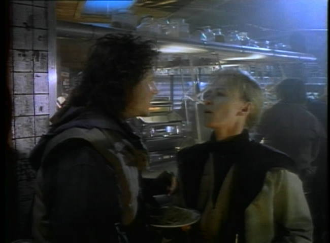
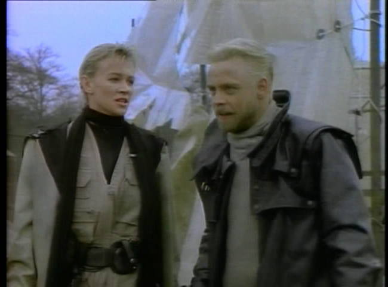
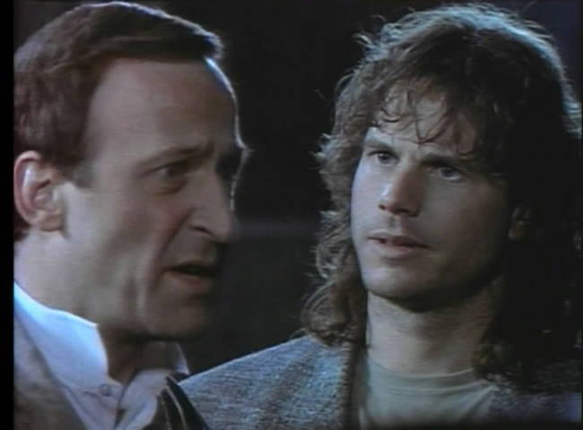
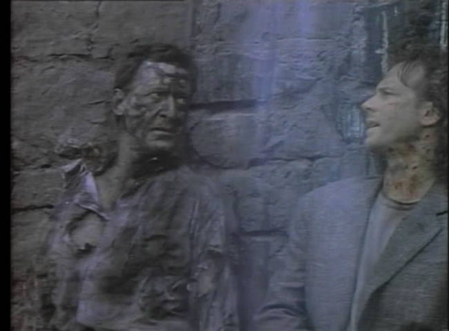

Movie review by : SFAM
Year : 1989
Directed by : Steven Lisberger
Written by : Tony Kayden (screenplay), Bill Bauer (story)
Degree of Cyberpunk visuals : Very Low
Correlation to Cyberpunk themes : Low
Rating : 5/10
Key cast members :

Overview: Slipstream is a movie directed by Tron's Steven Lisberger, who, thankfully, time has mostly forgotten. This movie is supposed to take place in some future time where the continents have all reshuffled themselves due to Earthquakes (yes, you might think this would take hundreds of millions of years, but Lisberger apparently knows better). For the most part, Slipstream is a pretty lousy movie. Especially lousy are the costumes and set designs. The costumes consists of regular 1980s attire, while the set designs, what little there are seem hastily manufactured with little attention to detail.

The plot concerns an escaped android named Byron, who's apparently killed someone, and has escaped to the fringes of society. The police bounty hunters, played by Mark Hamill and Kitty Aldridge, have just caught him after a 3 month trek, and are on their way back to bringing him in. On a stopover to get some food, they run into Matt, played by Bill Paxton, who sees Byron as his ticket to money and happiness. Without knowing he's an android, Matt steals Byron from the police, and escapes down the "slipstream", A river running down a huge gorge that seems to generate its own wind power. The rest of the movie is about Byron's emergence and his friendship with Matt, while still evading the bounty hunters.

Android Freewill: The only interesting part of this movie concerns a scene where Byron has just been told he's free, and, experiencing true freewill for the first time, is completely overloaded. He doesn't know how to handle it and immediately asks for Matt to tell him what to do. This scene is a little too "in your face" but it is the highlight of the movie, and really, pretty much the ONLY aspect of this movie that feels cyberpunk.

The Bottom Line: There really isn't much here. If you haven't seen it, you probably won't feel too bad. I will say that for the most part, the four acting leads give decent performances - this more than anything allows me to give it 5 stars. It's a shame they had so little to work with. The plot is forced, the sets are aweful and the costumes are basically what the actors wore to the shoot.